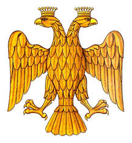
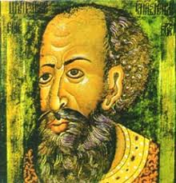

Древняя Русь
.jpg)
Призвание варягов
По «Повести временных лет», в 862 году новгородские словене, кривичи и финно-угорские племена пригласили варяжского князя Рюрика с дружиной править ими. С Рюрика началась династия, правившая до конца XVI века. Историческая достоверность спорна — это легендарная дата, ставшая основой норманнской теории происхождения русской государственности. 862 год считается условной точкой отсчёта истории русского государства.

Крещение Руси
Князь Владимир Святославич принял христианство византийского обряда и сделал его государственной религией. По летописи, выбору предшествовало «испытание вер». Массовое крещение в Днепре стало символом цивилизационного выбора в пользу Византии. Появилась славянская письменность, хроникальная традиция, каменная архитектура; Русь вошла в орбиту христианской Европы. Крещение определило восточнославянскую идентичность на тысячу лет.

Ярослав Мудрый и «Русская Правда»
Великий князь киевский, при котором Древнерусское государство достигло расцвета. Заключал династические браки с европейскими дворами — его дочери стали королевами Франции, Венгрии и Норвегии. Построил Софийский собор в Киеве. Главное наследие — «Русская Правда», первый письменный свод законов Руси: заменил кровную месть штрафами (вирами). Свидетельство перехода от родового общества к государственно-правовому.

Феодальная раздробленность
После смерти Ярослава Русь распалась на удельные княжества. Любечский съезд 1097 года закрепил принцип «каждый держит отчину свою». К XII веку существовало более десятка независимых княжеств. Двойственное явление: развитие местных центров культуры, но ослабление обороноспособности, сделавшее Русь уязвимой перед монгольским нашествием. Типично средневековое явление, схожее с дроблением Каролингской империи.
Монголо-татарское иго
Система политической и даннической зависимости русских княжеств от Золотой Орды, установленная после нашествия Батыя 1237–1240 годов. Князья получали «ярлык» от хана, платили «выход», участвовали в ордынских походах. Длилось около 240 лет. Оценки разнятся: одни видят в иге причину отставания от Европы; другие подчёркивают элементы культурного синтеза. В любом случае — ключевой фактор пути развития Руси.

Православная цивилизационная идентичность
С крещения 988 года православие стало для Руси не просто религией, но цивилизационным выбором — в пользу Византии и против латинского Запада. Принцип «симфонии властей» определял отношения князей и церкви. После падения Константинополя эта идея трансформировалась в концепцию «Третьего Рима». Православие сформировало этику, искусство, календарь и язык русской культуры до сегодняшнего дня.
Московское государство

Иван III Великий
Великий князь, при котором завершилось объединение русских земель вокруг Москвы (Новгород 1478, Тверь 1485) и было свергнуто ордынское иго (1480). Принял титул «государя всея Руси», женился на Софье Палеолог, перенеся в Москву византийскую символику (двуглавый орёл). Построил Московский Кремль, принял Судебник 1497 года. Многие историки именно его, а не Петра I, считают истинным «собирателем» русских земель.
Стояние на Угре
Войска Ивана III и хана Ахмата несколько недель стояли друг против друга на реке Угре. Ахмат не решился перейти реку под огнём русской артиллерии, ждал помощи польского короля Казимира IV, которая не пришла, и в ноябре отступил. Битвы не было, но «стояние» завершило 240-летнюю зависимость от Орды. 1480 год — отправная точка существования полностью независимого Московского государства.
«Москва — Третий Рим»
Концепцию сформулировал псковский старец Филофей в посланиях Василию III: «Два Рима пали, третий стоит, а четвёртому не быть». После падения Рима (476) и Константинополя (1453) Москва — последний хранитель православия. Концепция дала идеологическое обоснование принятия Иваном IV царского титула (1547) и учреждения Московского патриархата (1589). Шаблон мессианского самовосприятия прослеживается до сегодняшнего дня.

Опричнина Ивана Грозного
Система управления Ивана IV, разделившая страну на «опричнину» (личный удел царя с особым войском) и «земщину». Опричное войско носило чёрную форму, к сёдлам прикрепляли собачьи головы и мётлы — символы «выгрызания и выметания» измены. Цель — борьба с боярской «изменой». Результат: массовые казни, разорение Новгорода (1570), экономический упадок. Первый прецедент массового государственного террора против собственного населения.

Смутное время
Системный кризис после пресечения династии Рюриковичей. Включал династический кризис, гражданскую войну, голод 1601–1603 годов, самозванцев (Лжедмитрии I и II), польскую и шведскую интервенцию, оккупацию Москвы поляками (1610–1612). Освобождение Москвы Вторым ополчением Минина и Пожарского (октябрь 1612) и избрание Земским собором Михаила Романова (1613) положили начало 300-летней династии Романовых.
Закрепощение крестьян
Юридическое закрепление крестьян за землёй, развивавшееся с конца XV века (Судебник 1497 — ограничение Юрьевым днём) и завершившееся Соборным уложением 1649 года при Алексее Михайловиче. Уложение установило бессрочный сыск беглых — фактическое утверждение крепостного права. Цель — обеспечить служилое дворянство рабочей силой. Источник социальной отсталости, восстаний (Разин, Пугачёв) и революционных настроений.
Российская империя
.jpg)

Пётр I и его реформы
Первый император Всероссийский. Цель — модернизация России по западному образцу. Реформировал армию, создал флот, ввёл подушную подать, Табель о рангах, Сенат, коллегии. Основал Санкт-Петербург (1703). Цена реформ — массовая мобилизация, гибель десятков тысяч на стройке Петербурга, восстания, культурный раскол на «европейскую» элиту и «русское» крестьянство. Получил империю европейского уровня ценой колоссального напряжения нации.
Полтавская битва
Решающее сражение Северной войны между Россией и Швецией. Армия Карла XII, считавшаяся непобедимой и разгромившая Россию под Нарвой (1700), была разгромлена под Полтавой. Швеция утратила статус великой державы, Россия стала ведущей силой на Балтике. Ништадтский мир (1721) закрепил за Россией Прибалтику, Пётр I принял титул «Императора Всероссийского». Один из главных военных триумфов русской истории.

Просвещённый абсолютизм Екатерины II
Сочетание идей Просвещения с сохранением абсолютной власти. Екатерина переписывалась с Вольтером и Дидро, написала «Наказ» с цитатами из Монтескьё, провела губернскую реформу и секуляризацию. На словах — идеалы законности; на деле — расширение крепостного права, разделы Польши, подавление Пугачёва. Противоречие между декларируемыми идеалами и реальностью модернизации «сверху» в крепостной стране.

Отечественная война 1812
«Великая армия» Наполеона (более 600 000 человек) вторглась в Россию. Армия Кутузова отступала, заманивая противника вглубь. Бородинское сражение (26 августа) не дало решающего результата. После оставления Москвы и её пожара армия Наполеона была уничтожена холодом, голодом и партизанами. Война стала народной и моментом небывалого национального подъёма, вдохновила декабристов и роман «Война и мир». Россия стала «жандармом Европы».
Отмена крепостного права
Манифест Александра II освободил около 23 млн помещичьих крестьян от личной зависимости. Последовал за поражением в Крымской войне, показавшим отсталость крепостной России. Реформа половинчатая: личная свобода, но землю надо выкупать (платежи отменили только в 1907). Открыла дорогу остальным «Великим реформам». Неполнота реформы породила «аграрный вопрос», ставший причиной революций 1905 и 1917 годов.

Западники и славянофилы
Два направления русской общественной мысли. Западники (Грановский, Кавелин, Белинский) — Россия часть Европы, путь её — догоняющая модернизация по западному образцу. Славянофилы (Хомяков, Киреевский, Аксаковы) — у России собственный путь, опирающийся на православие, общину и «соборность». Спор о цивилизационном выборе продолжается до сегодняшнего дня в формах «либералы vs. почвенники» и «западники vs. евразийцы».
Советский период


Октябрьская революция
Вооружённое восстание большевиков в Петрограде, свергнувшее Временное правительство. Спланировано Военно-революционным комитетом во главе с Троцким, идейно — Лениным. Штурм Зимнего, передача власти II съезду Советов. Декреты о мире и о земле. Цель — построение социализма; результат — первое в мире социалистическое государство, 5-летняя гражданская война (1918–1922) и эмиграция миллионов. Переломный момент XX века.

В. И. Ленин
Создатель партии большевиков, идеолог и организатор Октябрьской революции, основатель Советского государства. Разработал концепцию партии «нового типа». После 1917 — глава Совнаркома: «военный коммунизм» (1918–1921), затем НЭП (1921). Подписал Брестский мир, утвердил создание СССР (1922). Хотел общество без эксплуатации; получил государство, ставшее тоталитарным при Сталине. Глобальное влияние на XX век.
_(издание_1946_года).jpg)
Марксизм-ленинизм как государственная идеология
Официальная идеология СССР: соединение марксистской теории классовой борьбы с ленинской концепцией пролетарской революции и партии-авангарда. Закреплена в Программе ВКП(б)/КПСС и советских конституциях, обязательно преподавалась во всех вузах в курсах истмата, диамата и научного коммунизма. Декларировала построение бесклассового коммунистического общества. На практике обосновывала монополию КПСС, плановую экономику и подавление инакомыслия как «буржуазной идеологии». Идея «реального социализма» и неизбежной победы над капитализмом определяла внутреннюю и внешнюю политику СССР на протяжении 74 лет, особенно в эпоху Холодной войны.

Сталинизм
Тоталитарная система и форсированная модернизация. Индустриализация (пятилетки) — тысячи заводов, металлургия. Коллективизация (1929–33) — насильственное объединение крестьян в колхозы — привела к голоду 1932–33 годов с миллионами жертв. «Большой террор» 1937–38: ~700 тыс. расстреляны, миллионы — через ГУЛАГ. Цель — «социализм в одной стране»; результат — победа в ВОВ, сверхдержава, но колоссальные жертвы.

Великая Отечественная война
Война СССР против нацистской Германии. Началась 22 июня 1941 года внезапным нападением. После катастроф 1941–42 — переломные победы: Москва (1941), Сталинград (1942–43), Курск (1943). В мае 1945 Красная армия взяла Берлин. Цена: ~27 млн погибших советских граждан. Центральное событие советской исторической памяти и ключевой элемент российской идентичности до сегодняшнего дня. Основа международного авторитета СССР.

Полёт Юрия Гагарина
Первый в истории человечества пилотируемый космический полёт. На корабле «Восток-1» Гагарин совершил виток вокруг Земли за 108 минут. Кульминация советской космической программы (Спутник-1 в 1957) и крупнейшая пропагандистская победа в Холодной войне. Превосходство удерживалось до американской высадки на Луну (1969). Одно из немногих событий XX века с однозначно позитивной оценкой в любых политических координатах.

Перестройка
Реформы М. С. Горбачёва: «ускорение», «гласность», «новое мышление». Цель — модернизировать социализм. Результат разошёлся с целями: гласность открыла обсуждение преступлений сталинизма; экономические реформы не помогли (дефицит, талоны); политическая либерализация привела к параду суверенитетов. Августовский путч ГКЧП и Беловежские соглашения — конец СССР. Пример того, как попытка реформ привела не к обновлению, а к крушению системы.
Новейшее время
Распад СССР
8 декабря 1991 лидеры России (Ельцин), Украины (Кравчук) и Беларуси (Шушкевич) подписали в Беловежской Пуще соглашение о роспуске СССР. 25 декабря Горбачёв ушёл в отставку, над Кремлём спущен советский флаг. На месте СССР возникло 15 независимых государств. Распад без масштабной войны, но повлёк миллионы перемещённых лиц, серию региональных конфликтов и глубокую экономическую депрессию 1990-х.

Борис Ельцин
Первый президент РФ. Бывший член Политбюро, опала при Горбачёве сделала его символом оппозиции «номенклатуре». В августе 1991 выступил против ГКЧП, в декабре подписал Беловежские соглашения. Возглавил радикальные реформы 1992 года. В октябре 1993 разрешил политический кризис расстрелом Верховного Совета. Начал Первую чеченскую войну (1994–96). В декабре 1999 досрочно ушёл в отставку, передав власть Путину.

«Шоковая терапия» и приватизация
Радикальные реформы Гайдара–Чубайса: либерализация цен (январь 1992), ваучерная приватизация (1992–94), залоговые аукционы (1995–96). Цель — переход к рыночной экономике. Результаты двойственны: частная собственность, рыночные институты — но гиперинфляция (~2500%), обесценивание сбережений, падение ВВП на 40% к 1998, дефолт, формирование «олигархов», рост бедности. «Лихие 90-е» — обоснование консервативного поворота 2000-х.

Владимир Путин
Второй и четвёртый президент РФ. Бывший офицер КГБ, директор ФСБ. Пришёл к власти на фоне Второй чеченской войны и роста цен на нефть. Первый период (2000-е): «стабилизация», ослабление олигархов, рост доходов. Второй период (с 2012): консервативный поворот, конфликт с Западом, Крым (2014), Сирия, СВО в Украине с 2022. Конституционные поправки 2020 обнулили его сроки. Определяющая фигура российской политики последней четверти века.
«Суверенная демократия»
Концепция, сформулированная в 2006 году Владиславом Сурковым: Россия — демократия, но её формы определяются самой Россией, а не Западом; суверенитет важнее заимствованных извне процедур. Ответ на «цветные революции» 2003–2005. Параллельно — идеи «русского мира» и «многополярного мира». Определила внутреннюю политику (ограничение НКО как «иностранных агентов») и внешнюю (Грузия 2008, Крым 2014, СВО 2022).

Российско-украинский конфликт
В феврале–марте 2014, после смены власти в Киеве в результате Евромайдана, Россия присоединила Крым (большинством стран мира признано аннексией). С весны 2014 — конфликт на востоке Украины. 24 февраля 2022 — «специальная военная операция»: полномасштабное вторжение. Заявленные цели Москвы — «демилитаризация», защита русскоязычных, предотвращение расширения НАТО. К 2026 РФ контролирует ~1/5 территории Украины, сотни тысяч жертв с обеих сторон. Май 2026 — переговоры при США, мира пока нет.